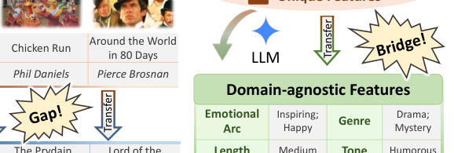
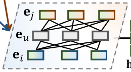

SemaCDR: LLM-Powered Transferable Semantics for Cross-Domain Sequential Recommendation (LLM 驱动的可迁移语义跨域序列推荐)
- 会议/期刊: WWW 2026 (The ACM Web Conference)
- 作者与机构: Chunxu Zhang, Shanqiang Huang, Zijian Zhang, Linsong Yu, Ruiqi Wan, Bo Yang (吉林大学)；Jiahong Liu, Irwin King (香港中文大学)
- 推荐链路定位: 召回（目标域 next-item 打分）
- 研究方向: 跨域与多场景推荐 / 大语言模型推荐
- 论文原文: https://arxiv.org/abs/2604.09551v1
- 开源代码: https://github.com/huangshanqiang/SemaCDR
TL;DR (1分钟核心速览)
跨域序列推荐（CDSR）长期依赖领域特有特征（电影片名、图书品牌），源域知识难以在语义层迁移，形成"特征可对齐、语义不可迁移"的瓶颈。SemaCDR 用 LLM 以统一 prompt 体系为物品批量生成 领域无关语义类别（Genre、Target Audience 等），与 ID、领域内 LLM 描述构成三视图表征，用对比正则把领域特定视图锚定到领域无关语义的邻近结构上，再经三张图（源/目标/混合二分图）+ Transformer + 跨注意力融合与自适应加权输出目标域打分。评估采用 Amazon 三对双向域、每测试样本 100 负采样的 Sampled Ranking 协议，六个方向 HR@10/NDCG@10 全面最优，最大相对提升 +14.7% (CD→Movie HR@10) 与 +19.1% (Food→Kitchen NDCG@5)。
Background & Motivation (背景与核心矛盾)
- 主流范式: CDR 分为 mapping-based（学习源→目标表征映射，如 π-Net）、fusion-based（共享因子分解/图结构联合建模，如 C2DSR、MGCL、Tri-CDR）与最新的 LLM-based（LLM 当特征编码器或直接当推荐器）。
- 前人局限: 其一，迁移对象是 领域特有特征或 ID，电影片名与书名之间不存在可比的语义坐标，跨域对齐只能在数值空间强行拉近，负迁移风险高；其二，单域序列模型（SASRec/CL4SRec）与图融合模型即便引入 item-item 图，也仍未显式区分"该保留的领域个性"与"该共享的跨域共性"。
- 核心洞察 (Key Insight): 真正可迁移的不是物品身份，而是 高层语义属性——"Emotional Arc / Tone / Length / Genre"这类 LLM 可稳定生成的抽象标签在电影与图书间天然共享，可作为源目标之间的"语义桥"。作者用 t-SNE 验证：加入领域无关语义后，源域与目标域物品表征重叠显著增加（图 3）。
- 本文切入点: 不做源→目标的显式映射，而是把两个域投影进 LLM 构造的统一语义空间，让迁移发生在语义层而非特征层。

Method (核心方法设计)
1. 整体框架 (Overall Architecture)
输入是用户的源域序列 \(\mathcal{S}^S_u\)、目标域序列\(\mathcal{S}^T_u\)与按时间戳归并的混合序列\(\mathcal{S}^{mix}_u\)，以及物品的原始文本元数据。多视图语义学习模块先用 LLM 生成领域内描述与领域无关语义类别，得到三种嵌入并做对比对齐；图协同学习模块在源 item 图、目标 item 图与跨域 user-item 二分图上传播，产出图增强物品/用户表征；跨域行为融合模块用三个 Transformer 分别编码三条序列，再用交叉注意力把源域信息注入目标序列；自适应融合预测模块对融合序列、混合域序列与用户表征做可学习加权，与目标物品 ID 嵌入做内积/MLP 打分，以 BPR + 对比正则联合训练。
flowchart TD
A["物品文本元数据 + 用户源/目标/混合序列"] --> B["LLM 多视图语义: ID / 领域内 / 领域无关"]
B --> C["对比正则对齐领域特定↔领域无关"]
C --> D["三图 GNN: 源图 / 目标图 / 混合二分图"]
D --> E["三路 Transformer + 交叉注意力融合"]
E --> F["自适应加权 α,β,γ → 目标域打分"]
2. 关键设计拆解 (Key Designs)
-
LLM 领域无关语义码本与三视图拼接：痛点是把"电影=某片名"这种身份信息当迁移载体，跨域不可比。本文用固定 prompt 模板让 LLM 为每个物品输出 \(K\)个高层类别下的若干子类，物品\(m\)的领域无关嵌入为子类嵌入的池化聚合\(\mathbf{e}^{agn}_m=\bigoplus_{k=1}^{K}\bigoplus_{v\in\mathcal{V}_m(c_k)}\mathbf{e}(v)\)；最终节点初始化为\(\mathbf{e}_m=\mathbf{e}^{ID}_m\oplus\mathbf{e}^{inn}_m\oplus\mathbf{e}^{agn}_m\)。直觉：ID 保个性、\(inn\)保领域内语义、\(agn\) 提供跨域公共坐标系，三者正交互补，故消融中同时去掉两者跌幅最大。
-
跨视图对比正则（把语义结构当"老师"）：仅拼接并不能保证领域特定嵌入尊重跨域语义邻近关系。作者以领域无关视图为 anchor，对 \((\mathbf{e}^{ID},\mathbf{e}^{agn})\)与\((\mathbf{e}^{inn},\mathbf{e}^{agn})\)两组视图对在源、目标域内分别施加 InfoNCE 式损失\(\mathcal{L}_c=-\sum_{i}\log\frac{\exp(\mathrm{sim}(\mathbf{e}^{q}_i,\mathbf{e}^{k}_i)/\tau)}{\sum_{i'}\exp(\mathrm{sim}(\mathbf{e}^{q}_i,\mathbf{e}^{k}_{i'})/\tau)}\)。作用机理是约束 物品间相对关系（谁和谁更像）而非绝对坐标，使 ID 空间被语义空间"结构化"，从而目标域物品能落进源域语义邻域。
-
跨域序列融合与自适应加权、训练目标：三路 Transformer 编码后，用 \(\mathbf{z}^{fuse}_u=\mathrm{CrossAttn}(Q=\mathbf{z}^T_u,K=\mathbf{z}^S_u,V=\mathbf{z}^S_u)\)让目标序列按自身需求检索源域行为；最终\(\mathbf{z}^{final}_u=\alpha\mathbf{z}^{fuse}_u+\beta\mathbf{z}^{mix}_u+\gamma\mathbf{h}^{mix}_u\)，\(\alpha,\beta,\gamma\)可学习（替代平均池化），预测\(\hat{y}_{u,i}=\phi(\mathbf{z}^{final}_u,\mathbf{e}^{ID}_i)\)。总损失\(\mathcal{L}=\mathcal{L}_{rec}+\lambda(\mathcal{L}^1_c+\mathcal{L}^2_c)\)，\(\mathcal{L}_{rec}\) 为标准 BPR，负样本为训练集内随机负采样；推理时只需前向序列编码 + 内积，LLM 仅在离线构图阶段调用一次，在线无额外大模型开销。
Experimental Setup & Evaluation Protocol (实验设置与评估协议)
- 数据集与预处理: Amazon Review 三个双向跨域场景，均按 CDR 常规做 5-core 类过滤，用户集跨域共享；详细统计见原文附录 B。
| 数据集(域对) | 领域组合 | 方向 | 稀疏/场景说明 |
|---|---|---|---|
| Kitchen–Food | Home_and_Kitchen ↔ Grocery_and_Gourmet_Food | 双向 | 高相关域，共享"厨房/食材"语义 |
| Movie–Book | Movies_and_TV ↔ Books | 双向 | 中等相关，共享叙事/题材语义 |
| CD–Movie | CDs_and_Vinyl ↔ Movies_and_TV | 双向 | 弱相关，检验负迁移鲁棒性 |
- 数据划分与防穿越 (Splitting Strategy): 沿用 C2DSR/Tri-CDR 设定的
Leave-One-Out式序列切分（每用户最后一项作测试、倒数第二项作验证），源/目标域序列各自按时间戳保序，混合序列按跨域时间戳归并。 - 排名评测协议 (Ranking Protocol):
Sampled Ranking——每个测试正样本随机采 100 个负样本参与排序，报告 HR@{5,10} 与 NDCG@{5,10}，五次独立运行取均值并给出标准差。 - 对比基线与超参设置: 单域基线 SASRec、CL4SRec；跨域基线 π-Net、C2DSR、MGCL、CD-SASRec、Tri-CDR、TJAPL。统一隐层维度 \(d=64\)、batch 256、dropout 0.5、最大序列长度 100；最优超参\(K=8\)（语义类别数）、\(\lambda=0.1\)，语义相关模块学习率\(3e^{-4}\)、其余\(1e^{-3}\)；RTX 3090 单卡训练。
Key Experimental Results (实验关键数据)
1. 主实验对比 (Main Results)
| 方法 | Kitchen→Food N@5 | HR@10 | Food→Kitchen N@5 | HR@10 | Book→Movie N@5 | HR@10 | Movie→Book N@5 | HR@10 | CD→Movie N@5 | HR@10 | Movie→CD N@5 | HR@10 |
|---|---|---|---|---|---|---|---|---|---|---|---|---|
| SASRec | 0.1754 | 0.3248 | 0.1099 | 0.2369 | 0.2246 | 0.4356 | 0.1989 | 0.3864 | 0.1631 | 0.3292 | 0.1795 | 0.3584 |
| CL4SRec | 0.1885 | 0.3879 | 0.1176 | 0.2741 | 0.2724 | 0.4909 | 0.2442 | 0.4912 | 0.1915 | 0.4224 | 0.2243 | 0.4721 |
| π-Net | 0.1653 | 0.3184 | 0.1649 | 0.3172 | 0.2171 | 0.3918 | 0.2154 | 0.3905 | 0.1434 | 0.2720 | 0.1443 | 0.2758 |
| C2DSR | 0.1739 | 0.3328 | 0.1381 | 0.2871 | 0.2468 | 0.4469 | 0.1748 | 0.3349 | 0.1977 | 0.3620 | 0.1808 | 0.3716 |
| MGCL | 0.2191 | 0.4335 | 0.1542 | 0.3389 | 0.2382 | 0.4551 | 0.2387 | 0.3996 | 0.2308 | 0.4703 | 0.2456 | 0.5074 |
| CD-SASRec | 0.2147 | 0.4298 | 0.1139 | 0.2547 | 0.3254 | 0.6004 | 0.3235 | 0.5998 | 0.2306 | 0.4726 | 0.2372 | 0.4651 |
| Tri-CDR | 0.1892 | 0.3926 | 0.1420 | 0.3315 | 0.3258 | 0.5998 | 0.2871 | 0.5488 | 0.2322 | 0.4750 | 0.2434 | 0.5084 |
| TJAPL | 0.2454 | 0.4464 | 0.1719 | 0.3616 | 0.3507 | 0.6090 | 0.3434 | 0.6019 | 0.2747 | 0.5020 | 0.2869 | 0.5287 |
| SemaCDR | 0.2736 | 0.4775 | 0.2047 | 0.3806 | 0.3548 | 0.6199 | 0.3607 | 0.6256 | 0.3256 | 0.5760 | 0.3185 | 0.5562 |
| Improv.% | +11.5 | +7.0 | +19.1 | +5.3 | +1.2 | +1.8 | +5.0 | +3.9 | +18.5 | +14.7 | +11.0 | +5.2 |
2. 消融实验 (Ablation Study)
| 变体 (Kitchen→Food) | N@5 | N@10 | HR@5 | HR@10 |
|---|---|---|---|---|
| w/o InnSem | 0.2608 | 0.2993 | 0.3459 | 0.4637 |
| w/o DomAgnSem | 0.2502 | 0.2896 | 0.3392 | 0.4591 |
| w/o Inn+DomAgnSem | 0.2370 | 0.2740 | 0.3258 | 0.4404 |
| SimpGraph（仅单域 item 图） | 0.2698 | 0.3014 | 0.3505 | 0.4721 |
| w/o CDBehav（去跨域序列融合） | 0.2671 | 0.3009 | 0.3469 | 0.4678 |
| AvgFusion（改为均值融合） | 0.2510 | 0.2867 | 0.3373 | 0.4479 |
| w/o ConReg（去对比正则） | 0.2633 | 0.2948 | 0.3510 | 0.4631 |
| SemaCDR (Full) | 0.2736 | 0.3105 | 0.3633 | 0.4775 |
3. 关键实验发现 (Key Findings)
- 语义视图是性能主引擎，且两者互补而非冗余：同时去掉领域内与领域无关语义后 N@5 从 0.2736 掉到 0.2370（-13.4%），单去 \(DomAgnSem\)已损失 8.6%，说明 LLM 语义不是锦上添花而是把 ID 空间"重排"的结构性信号；二者同时移除的跌幅大于任一单独移除，验证了\(\mathbf{e}^{inn}\)（个性内容）与\(\mathbf{e}^{agn}\)（跨域共性）承担不同职能。
- 融合策略比融合动作本身更关键：把可学习 \(\alpha,\beta,\gamma\) 换成均值池化，N@5 掉到 0.2510（-8.3%），跌幅甚至超过完全移除跨域序列融合（0.2671，-2.4%）——说明源域信号"该以多大权重进来"比"是否进来"更决定上限，跨域负迁移主要由无权融合引入。
- 弱相关域收益最大，强基线场景收益收敛：CD→Movie（音乐 vs 电影，语义最远）HR@10 相对提升 +14.7%、N@5 +18.5%，Food→Kitchen N@5 +19.1%；而 Book→Movie 仅 +1.2%，因该场景 CD-SASRec/TJAPL 已达 0.3254/0.3507 高位，增益空间被压缩。兼容性实验进一步佐证增益可叠加：把多视图语义+对比正则插入 C2DSR，Food→Kitchen N@5 +12.8%、Movie→Book HR@10 +19.2%；插入 Tri-CDR 亦有 +1.4%~+4.6% 的稳定正收益。
Highlights & Limitations (亮点、对比与审稿批判)
- 与代表作对比: 相对 π-Net 这类映射式方法，本文不再学习域间变换函数，而是构造可共享的语义坐标，避免映射矩阵在弱相关域上的过拟合；相对 C2DSR/MGCL 这类对比式跨域图模型，本文的对比信号来自"领域特定↔领域无关"的视图内一致性而非跨序列互信息，迁移粒度从行为级下沉到物品语义级；相对把 LLM 当推荐器直接微调的路线，本文只把 LLM 当离线语义标注器，在线成本几乎为零。
- 可迁移亮点: (i) 用固定 prompt 批量生成"领域无关属性码本"并做子类嵌入池化，这一套做法可直接插进任何跨域/多场景模型（论文已验证对 C2DSR、Tri-CDR 通用）；(ii) 以语义视图为 anchor、以 ID 视图为 query 的视图间 InfoNCE 约束，可作为通用正则项约束表征空间的邻域结构。
- 审稿级局限批判: 其一，语义迁移的能力上界被 LLM 生成类别质量锁死，\(K=8\) 与子类划分依赖手工 prompt，跨域对（尤其 CD–Movie 这类抽象属性稀缺品类）可能出现语义标签失配，论文未量化 LLM 标注噪声的影响；其二，评估仅用 100 负采样的 Sampled Ranking，未报告 Full-Ranking 结果，高曝光热门物品的假阳性未被充分暴露，且缺线上 A/B 与冷启动分桶实验，实际业务收益仍待验证。
Rating (四维评分)
- 方法创新性 (Novelty): ⭐⭐⭐⭐ （把"跨域迁移"重构为"统一语义空间构造 + 视图间结构对齐"，思路清晰且区别于常规映射/融合范式，但各组件本身多为已有技术的组合式创新）
- 评估协议与实验扎实度 (Protocol & Experiments): ⭐⭐⭐⭐ （六个双向场景 + 8 个 SOTA 基线 + 五种子标准差 + 完整消融与兼容性实验很扎实，扣分在仅 Sampled 100 负采样、缺 Full-Ranking 与冷启动分桶）
- 写作与数学规范度 (Clarity & Rigor): ⭐⭐⭐⭐ （公式简洁、模块边界清晰，\(\oplus\)/\(\bigoplus\) 聚合算子与图的边权定义明确；但聚合算子表述过泛，缺乏对 LLM 语义码本构建过程的复杂度分析）
- 工业落地与复现价值 (Industrial & Practical Value): ⭐⭐⭐⭐ （代码已开源，LLM 仅离线调用一次、在线为常规 GNN+Transformer 推理，易于接入现有召回链路；主要成本在语义码本的离线生成与三图维护）